01
ТЫ ИГРАЕШЬ —
МЫ ПОМОГАЕМ
Вызов персонала, оформление заказов и пополнение баланса прямо с компьютера. А наши сотрудники всегда рядом и помогут разобраться с любым вопросом.
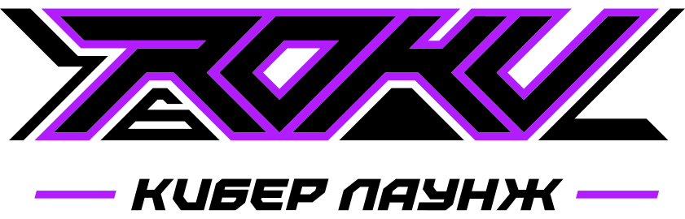
CYBER LOUNGEТвое кибер-пространство с лучшими ПК и сервисом в РФ
Загляни внутрь.
Открой фотографии и детали каждой зоны.
Выбери зону, посмотри характеристики и тарифы. Интерьеры показаны на визуализациях.
Вызов персонала, оформление заказов и пополнение баланса прямо с компьютера. А наши сотрудники всегда рядом и помогут разобраться с любым вопросом.
Огромный выбор игр на любой вкус, от популярных новинок до любимой классики.
Готовые игровые профили с приобретёнными играми. Просто выбирайте игру, запускайте и наслаждайтесь.
Все игровые места, оборудование проходят тщательную обработку и дезинфекцию, чтобы ваш отдых был не только комфортным, но и безопасным.
Можно прийти на пару каток. Можно собраться компанией, заказать еду и провести здесь атмосферный вечер.
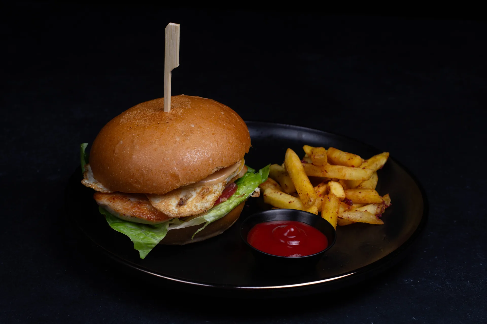
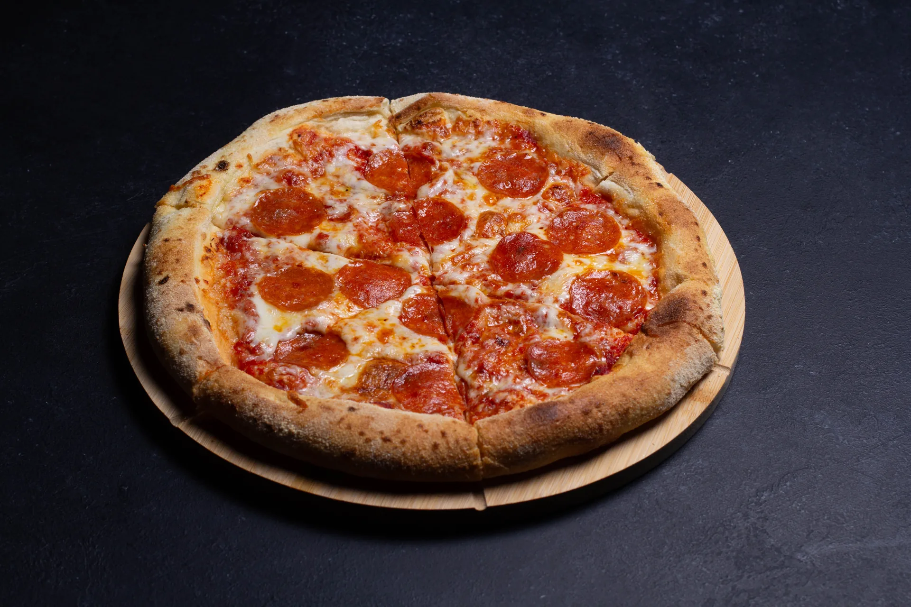
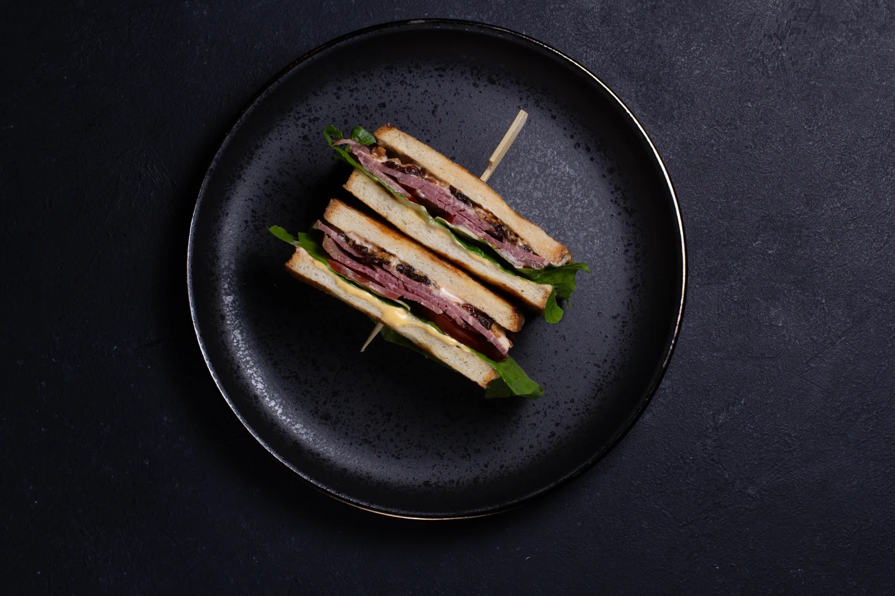
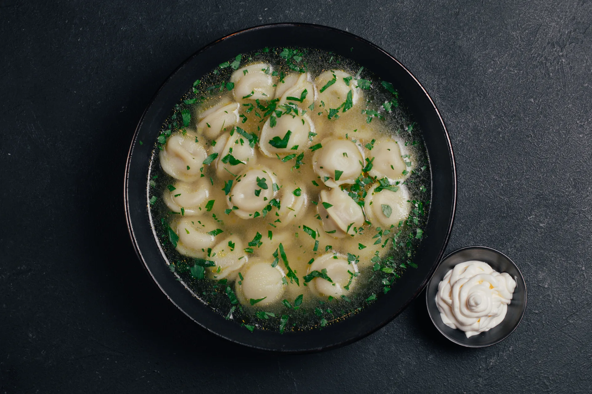
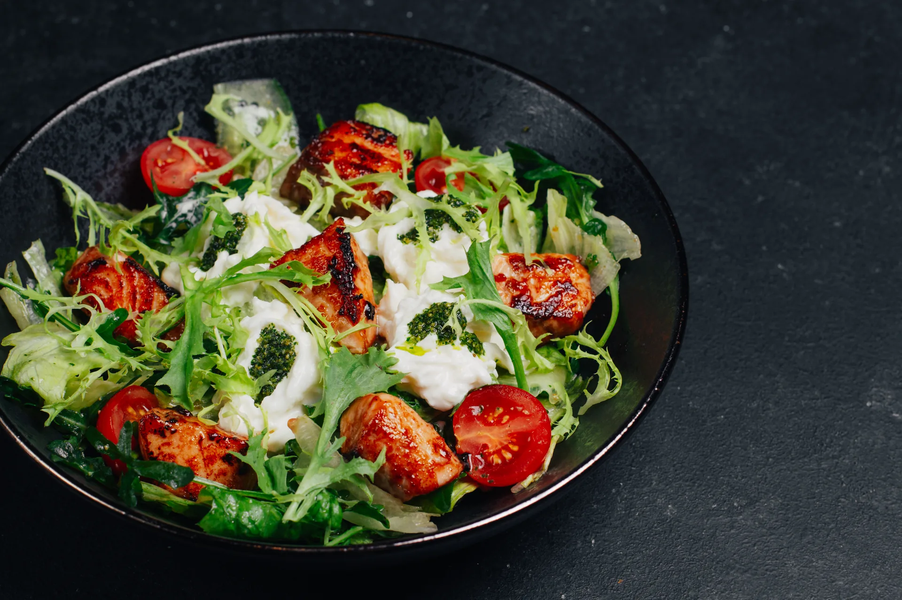
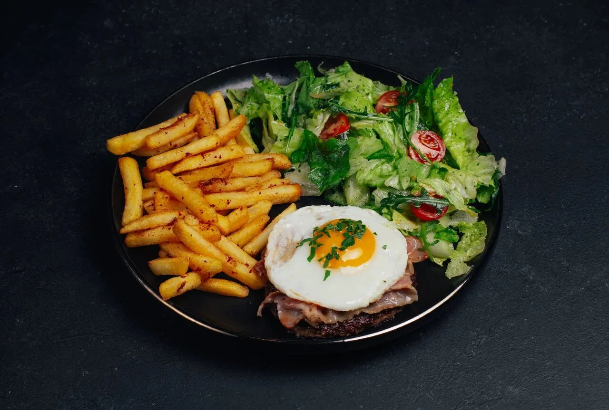
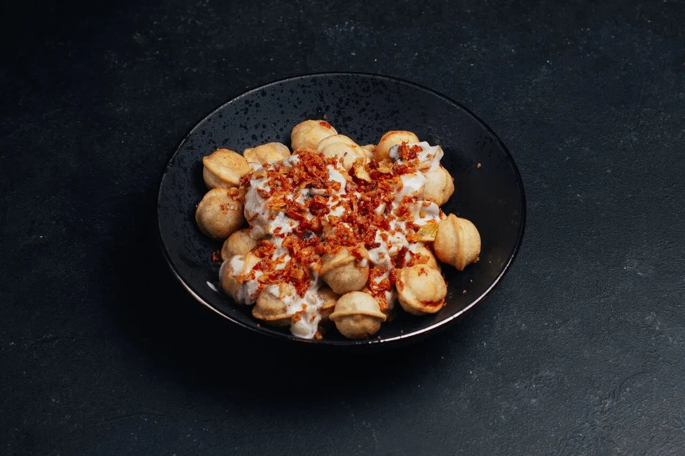
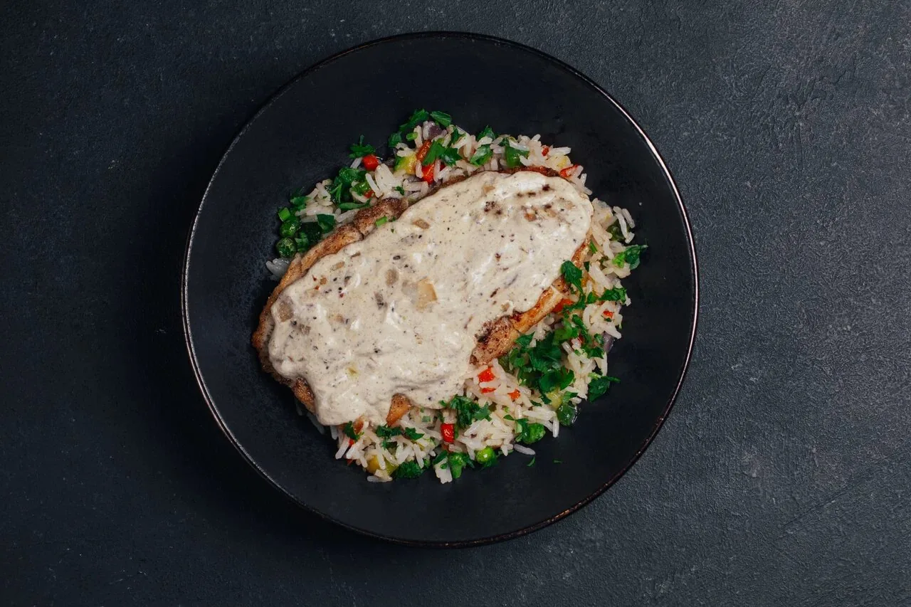
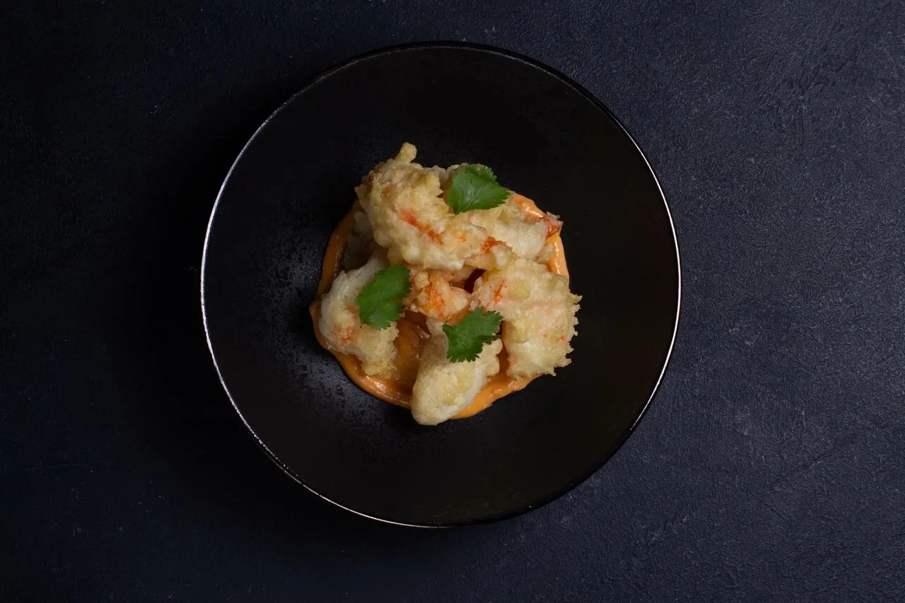
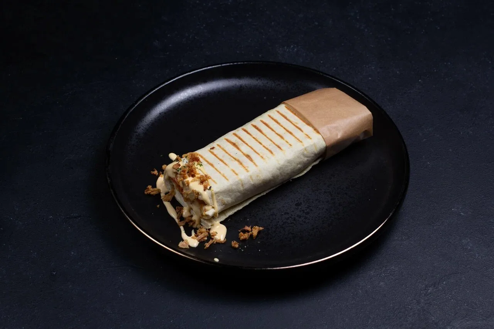
Хорошая игра заслуживает
хорошей еды.
В ROKU мы знаем, что идеальная игровая сессия невозможна без вкусной еды. Наш кибер клуб с кухней предлагает меню ресторанного уровня: от быстрых закусок до авторских горячих блюд. Устрой перерыв между катками и насладись вкусом, не покидая своего места.
Скоро покажем блюда и расскажем подробнее.
Сменить игровое кресло на мягкий диван
Обсудить лучшие моменты. Просто побыть вместе
Приходи знакомиться с ROKU.
В день открытых дверей все зоны будут работать бесплатно. Оставь заявку на участие и познакомься с пространством одним из первых.
Время проведения и подробные условия участия уточняются.
Запись на день открытых дверей
В ROKU Воронеж три формата PC-зон: COMFORT — Ryzen 5 7500F и RTX 4060 Ti 16 ГБ; BOOTCAMP — Ryzen 5 7600X3D и RTX 4070 SUPER 12 ГБ; VIP PC — Ryzen 7 7800X3D и RTX 4080 SUPER 16 ГБ. Для любителей консолей — VIP PLAYSTATION с PS5 и SUPER VIP PLAYSTATION с PS5 Pro.
В ROKU Воронеж игровой вечер можно дополнить кухней ресторанного уровня и отдыхом в лаунже. В меню — быстрые закуски и горячие блюда; мягкие диваны и приглушённый свет помогают переключиться между матчами. Подробности меню и обслуживания можно уточнить у команды клуба.
В зонах COMFORT и BOOTCAMP установлены мониторы 240 Гц, в VIP PC — 300 Гц. В VIP PLAYSTATION предусмотрен экран 85 дюймов, в SUPER VIP PLAYSTATION — 100 дюймов; по прайсу клуба оба экрана поддерживают 240 Гц.
ROKU Cyber Lounge находится в Воронеже. Точный адрес и маршрут до клуба появятся в разделе контактов. Внутри — общий игровой зал, шумоизолированный BOOTCAMP, VIP PC, PlayStation и лаунж.
COMFORT — 300 ₽ за час, BOOTCAMP — 550 ₽, VIP PC — 800 ₽. VIP PLAYSTATION — 950 ₽ за час, SUPER VIP PLAYSTATION — 1 650 ₽. Для отдельных зон есть пакеты на 3 и 6 часов, утренние и ночные тарифы. Полный прайс открывается по нажатию на карточку зоны.
ROKU Cyber Lounge в Воронеже объединяет игры, кухню и отдых в одном пространстве. Можно прийти на несколько матчей, собраться компанией в отдельной зоне или продолжить вечер в лаунже.
Точный адрес, маршрут и контакты появятся здесь перед открытием.
Хочу на открытие ↗